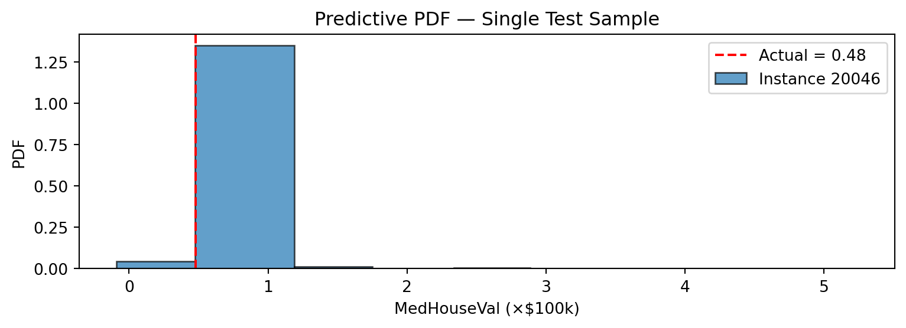
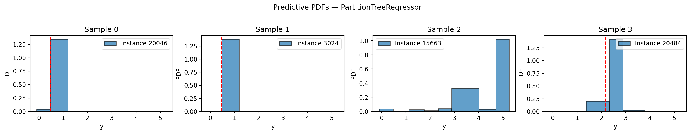

import pandas as pd
from sklearn.datasets import fetch_california_housing
from sklearn.model_selection import train_test_split
housing = fetch_california_housing(as_frame=True)
X = housing.data
y = housing.target.rename("MedHouseVal")
X_train, X_test, y_train, y_test = train_test_split(
X, y, test_size=0.2, random_state=42
)Tutorial: Probabilistic Regression
Full predictive distributions with the skpro interface
The partition_tree.skpro module exposes the same Partition Tree algorithm through the skpro BaseProbaRegressor interface. Instead of a scalar prediction, predict_proba returns an IntervalDistribution — a piecewise-constant density that you can query for PDF values, CDFs, quantiles, prediction intervals, and random samples.
NoteJust want point predictions?
See the Regression tutorial, which uses the lighter-weight partition_tree.sklearn interface and returns plain NumPy arrays.
Setup
1. Baseline — Decision Tree (CART)
CART produces only point predictions, so we use MAE and R² as the comparison baseline.
from sklearn.tree import DecisionTreeRegressor
from sklearn.metrics import root_mean_squared_error, r2_score
import numpy as np
cart = DecisionTreeRegressor(random_state=42)
cart.fit(X_train, y_train)
y_pred_cart = cart.predict(X_test)
print("=== DecisionTreeRegressor (CART) ===")
print(f"RMSE : {root_mean_squared_error(y_test, y_pred_cart):.4f}")
print(f"R² : {r2_score(y_test, y_pred_cart):.4f}")
print("(no probabilistic output available)")=== DecisionTreeRegressor (CART) ===
RMSE : 0.7037
R² : 0.6221
(no probabilistic output available)2. Single Partition Tree
Fit and point prediction
from partition_tree.skpro import PartitionTreeRegressor
pt = PartitionTreeRegressor(
min_volume_fraction=0.1,
)
pt.fit(X_train, y_train)
# Point prediction — posterior mean of the conditional density
y_pred_pt = pt.predict(X_test)print("=== PartitionTreeRegressor ===")
print(f"RMSE : {root_mean_squared_error(y_test, y_pred_pt):.4f}")
print(f"R² : {r2_score(y_test, y_pred_pt):.4f}")=== PartitionTreeRegressor ===
RMSE : 0.5879
R² : 0.7362Comparison with CART
pd.DataFrame({
"Model": ["DecisionTree (CART)", "PartitionTree"],
"RMSE": [
root_mean_squared_error(y_test, y_pred_cart),
root_mean_squared_error(y_test, y_pred_pt),
],
"R²": [
r2_score(y_test, y_pred_cart),
r2_score(y_test, y_pred_pt),
],
}).round(4)| Model | RMSE | R² | |
|---|---|---|---|
| 0 | DecisionTree (CART) | 0.7037 | 0.6221 |
| 1 | PartitionTree | 0.5879 | 0.7362 |
Probabilistic prediction
predict_proba returns an IntervalDistribution:
dist = pt.predict_proba(X_test)
print(type(dist))<class 'partition_tree.skpro.distribution.IntervalDistribution'>3. The IntervalDistribution API
From the distribution object you can extract:
# Posterior mean (same as predict)
mean = dist.mean()
# Posterior variance
var = dist.var()
# Quantiles via the inverse CDF (percent-point function)
median = dist.ppf(0.5)
lower_90 = dist.ppf(0.05)
upper_90 = dist.ppf(0.95)
# Random samples from the predictive distribution
samples = dist.sample(n_samples=100)
# PDF / CDF evaluated at specific points
pdf_vals = dist.pdf(y_test.to_frame())
cdf_vals = dist.cdf(y_test.to_frame())
print("mean shape :", mean.shape)
print("var shape :", var.shape)
print("ppf shape :", median.shape)mean shape : (4128, 1)
var shape : (4128, 1)
ppf shape : (4128, 1)| Method | Returns |
|---|---|
mean() |
Posterior mean — pd.DataFrame |
var() |
Posterior variance — pd.DataFrame |
pdf(x) |
Density at x — pd.DataFrame |
log_pdf(x) |
Log-density at x — pd.DataFrame |
cdf(x) |
CDF at x — pd.DataFrame |
ppf(q) |
Quantile at level q — pd.DataFrame |
sample(n_samples) |
Random samples — pd.DataFrame |
energy(x) |
Energy score — pd.DataFrame |
plot(ax) |
Plot the piecewise-constant PDF |
4. Prediction Intervals
Prediction intervals are constructed directly from the inverse CDF.
import numpy as np
# 80 % prediction interval: [10th percentile, 90th percentile]
lower_80 = dist.ppf(0.10)["MedHouseVal"]
upper_80 = dist.ppf(0.90)["MedHouseVal"]
y_true = y_test.values
covered = ((y_true >= lower_80.values) & (y_true <= upper_80.values)).mean()
print(f"80% PI empirical coverage: {covered:.1%}")80% PI empirical coverage: 76.1%
NoteWhy coverage may differ from the nominal level
The Partition Tree density is learned from training data, so calibration improves with more data and better-tuned hyperparameters. Using PartitionForestRegressor (Section 5) typically yields better-calibrated intervals through density averaging.
5. Visualizing the Predictive PDF
IntervalDistribution has a built-in plot method that renders the piecewise-constant density as histogram-like bars.
import matplotlib.pyplot as plt
# Single test sample
idx = y_test.index[0]
dist_single = dist.loc[[idx]]
fig, ax = plt.subplots(figsize=(8, 3))
dist_single.plot(ax=ax, alpha=0.7)
ax.axvline(
y_test.loc[idx],
color="red",
linestyle="--",
label=f"Actual = {y_test.loc[idx]:.2f}",
)
ax.set_xlabel("MedHouseVal (×$100k)")
ax.set_ylabel("PDF")
ax.set_title("Predictive PDF — Single Test Sample")
ax.legend()
plt.tight_layout()
plt.show()
# Four samples side by side
fig, axes = plt.subplots(1, 4, figsize=(16, 3))
for ax, i in zip(axes, range(4)):
row_idx = y_test.index[i]
dist.loc[[row_idx]].plot(ax=ax, alpha=0.7)
ax.axvline(y_test.iloc[i], color="red", linestyle="--", linewidth=1.5)
ax.set_title(f"Sample {i}")
ax.set_xlabel("y")
plt.suptitle("Predictive PDFs — PartitionTreeRegressor", y=1.02)
plt.tight_layout()
plt.show()
6. Partition Forest — Better Calibrated Distributions
PartitionForestRegressor averages the conditional densities from multiple trees, producing smoother and better-calibrated distributions.
from partition_tree.skpro import PartitionForestRegressor
pf = PartitionForestRegressor(
n_estimators=50,
random_state=42,
min_volume_fraction=0.1,
output_distribution="mixture",
)
pf.fit(X_train, y_train)
dist_forest = pf.predict_proba(X_test)
y_pred_forest = pf.predict(X_test)7. Random Forest comparison
from sklearn.ensemble import RandomForestRegressor
rf = RandomForestRegressor(
n_estimators=50,
random_state=42,
)
rf.fit(X_train, y_train)
y_pred_rf = rf.predict(X_test)Point metrics comparison
pd.DataFrame({
"Model": ["DecisionTree (CART)", "PartitionTree", "PartitionForest", "RandomForest"],
"RMSE": [
root_mean_squared_error(y_test, y_pred_cart),
root_mean_squared_error(y_test, y_pred_pt),
root_mean_squared_error(y_test, y_pred_forest),
root_mean_squared_error(y_test, y_pred_rf),
],
"R²": [
r2_score(y_test, y_pred_cart),
r2_score(y_test, y_pred_pt),
r2_score(y_test, y_pred_forest),
r2_score(y_test, y_pred_rf),
],
}).round(4)| Model | RMSE | R² | |
|---|---|---|---|
| 0 | DecisionTree (CART) | 0.7037 | 0.6221 |
| 1 | PartitionTree | 0.5879 | 0.7362 |
| 2 | PartitionForest | 0.5076 | 0.8034 |
| 3 | RandomForest | 0.5072 | 0.8037 |
Coverage comparison
lower_f = dist_forest.ppf(0.10)["MedHouseVal"]
upper_f = dist_forest.ppf(0.90)["MedHouseVal"]
covered_f = ((y_true >= lower_f.values) & (y_true <= upper_f.values)).mean()
print(f"Tree 80% PI coverage: {covered:.1%}")
print(f"Forest 80% PI coverage: {covered_f:.1%}")Tree 80% PI coverage: 76.1%
Forest 80% PI coverage: 94.1%output_distribution option
PartitionForestRegressor supports two strategies for combining per-tree distributions:
output_distribution |
Description |
|---|---|
"merged" (default) |
Merges all tree breakpoints into one IntervalDistribution. Full API support, computed once at predict time. |
"mixture" |
Returns a MixtureIntervalDistribution. PDF/CDF/quantiles computed on-the-fly; avoids the merge cost. |
pf_mix = PartitionForestRegressor(
n_estimators=50,
random_state=42,
min_volume_fraction=0.1,
output_distribution="mixture",
)
pf_mix.fit(X_train, y_train)
dist_mix = pf_mix.predict_proba(X_test)8. Feature Importances
Feature importances are accumulated log-loss gain across all splits:
importances = pt.get_feature_importances(normalize=True)
for feat, imp in importances.items():
print(f" {feat:>20s}: {imp:.4f}") target_MedHouseVal: 0.2436
MedInc: 0.1911
Longitude: 0.1513
Latitude: 0.1367
AveOccup: 0.1089
AveRooms: 0.0481
HouseAge: 0.0434
Population: 0.0411
AveBedrms: 0.0358